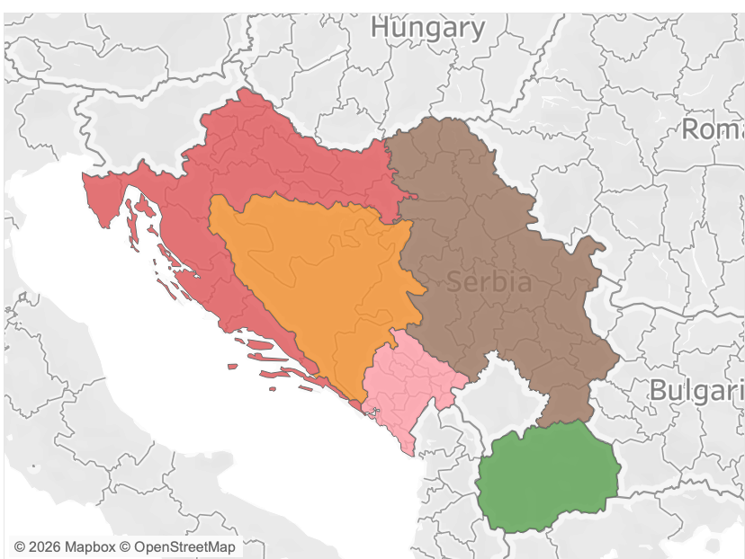

Geography
Former Yugoslavia in the Balkans
Yugoslavia, meaning "Land of the South Slavs," was a country in southeastern Europe that existed in various forms from 1918 to 1992, comprising six socialist republics: Slovenia, Croatia, Bosnia and Herzegovina, Serbia, Montenegro, and Macedonia.

Former Yugoslav territory — the six constituent republics color-coded by region.
Political Geography
The Six Republics
Croatia
Adriatic coastline and inland plains. Centuries of Habsburg rule shaped a textile tradition with strong Central European influence.
Serbia
Heartland of South Slavic culture and the Serbian Orthodox tradition. Under Ottoman rule until 1878.
Macedonia
Under Ottoman rule until 1912 which was later than any other Yugoslav republic, shaping a distinctly geometric aesthetic tradition.
Bosnia & Herzegovina
A crossroads of Catholic, Orthodox, and Islamic traditions, reflecting centuries of both Habsburg and Ottoman influence.
Montenegro
Small mountainous republic on the Adriatic coast with a strong tradition of independent highland culture.
Slovenia
The northernmost republic, most heavily influenced by Central European Habsburg culture and the closest to Western Europe.
History
A Brief Historical Timeline
Until 1878
Serbia and Montenegro under Ottoman rule.
Until 1912
Macedonia remains under Ottoman control, the last Yugoslav region to gain independence.
Until 1918
Croatia, Slovenia, and Bosnia-Herzegovina governed by the Austro-Hungarian Empire.
1918
Formation of the Kingdom of Serbs, Croats and Slovenes following World War I.
1929
Kingdom renamed the Kingdom of Yugoslavia under King Alexander I's dictatorship.
1930 & 1936–37
Blanche Payne conducts two solo research trips through The Balkans & Yugoslavia documenting and collecting regional folk costumes.
1941–45
Yugoslavia occupied during World War II. Many regional traditions are disrupted or lost.
1945–92
Socialist Federal Republic of Yugoslavia under Tito. Folk traditions preserved as part of national cultural policy.
1991–92
Yugoslavia dissolves into independent states following a series of wars.
Further Viewing
Videos: History & Tradition